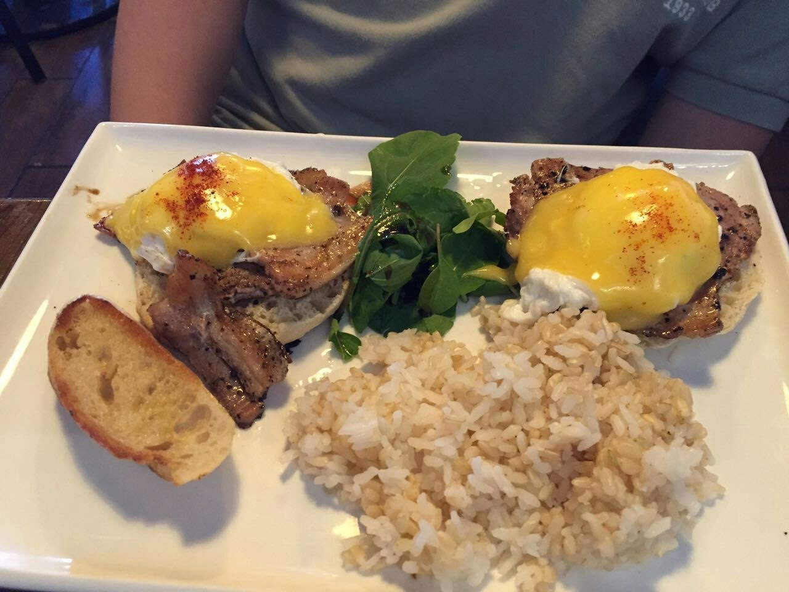
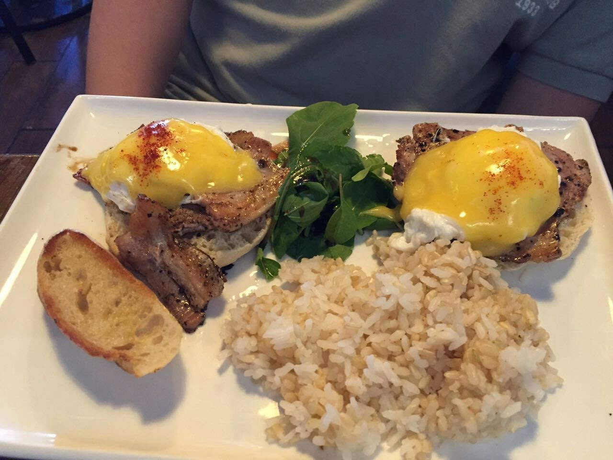

我的个人日记
王超辰
from 2016-06-21
1 把bookdown也当作一种记录方式
发现了全新的bookdown写作包，可以让人更加畅快的写作和阅读了。R语言的世界真是日新月异的进化。世界也才因此而有趣。
花了点时间阅读了一下bookdown写作包的demo源代码之后，立刻决定把日志都搬到这里来好了。反正也没什么人会留下评论和意见，如果有读到不爽之处非要找下蛋的鸡，就直接发邮件至abelardccwang.at.gmail.com吧。
你正在阅读我的日记，我的想法，我的心路历程。我的世界其实很简单。愿这个世界也能简单一些吧。
1.1 夏威夷旅行 (2) – 海龟在沙滩上晒太阳
2016-06-22 written

上回说到我们一家三口去夏威夷旅行的计划，今天就来说说，我们旅行中详细的体验吧。
1.1.1 第一天5月5日
名古屋中部机场–檀香山国际机场 JL-794 22:05–10:35 实际航行时间8小时32分钟  飞机是晚上22:05起飞，我们提前一个多小时抵达机场，停车出关。顺便说一下，这次我申请了美帝的旅游签证，果然给了10年有效期。只是本身护照有效期限是截止2019年。之后如果换了新护照，估计我就要每次都背两本护照了。
飞机是晚上22:05起飞，我们提前一个多小时抵达机场，停车出关。顺便说一下，这次我申请了美帝的旅游签证，果然给了10年有效期。只是本身护照有效期限是截止2019年。之后如果换了新护照，估计我就要每次都背两本护照了。
一开始担心小朋友睡不安稳。后来知道是我们想多了。不过一路上轮流抱着小孩睡也是有点累人。  抵达檀香山机场以后，迅速去找租车公司dollar rental car的机场接送巴士。一路上问了好几个当地人，才找到高架底下跟车牌差不多大小的巴士停靠指示牌。这要是在日本，一定是一路都有箭头指向，不需要开口问任何人的。对待游客的细致和粗犷一目了然。顺利领到车以后便打开查好的美食地图想去事先在Yelp上查好的“Ono Hawaiian Foods”，也是Eri推荐的夏威夷餐厅。 但是可能由于我刚到夏威夷，既不熟悉地形，也还没适应开着的SUV。所以前后按着地址来回开了好几趟，也没看到它的门或者停车场在哪里。失去耐心以后发现离那家餐厅的地址也有点远了，于是把车停到路边去，问了一个路过的老太太，老太太也不清楚，随意就指了指不远处另一家叫做the nook neighborhood bistro的餐厅说那里的汉堡还不错。并且还耐心的指导我们怎么停车。第一顿午饭也是真够折腾的。到当地时间快1点了才开始点菜。
抵达檀香山机场以后，迅速去找租车公司dollar rental car的机场接送巴士。一路上问了好几个当地人，才找到高架底下跟车牌差不多大小的巴士停靠指示牌。这要是在日本，一定是一路都有箭头指向，不需要开口问任何人的。对待游客的细致和粗犷一目了然。顺利领到车以后便打开查好的美食地图想去事先在Yelp上查好的“Ono Hawaiian Foods”，也是Eri推荐的夏威夷餐厅。 但是可能由于我刚到夏威夷，既不熟悉地形，也还没适应开着的SUV。所以前后按着地址来回开了好几趟，也没看到它的门或者停车场在哪里。失去耐心以后发现离那家餐厅的地址也有点远了，于是把车停到路边去，问了一个路过的老太太，老太太也不清楚，随意就指了指不远处另一家叫做the nook neighborhood bistro的餐厅说那里的汉堡还不错。并且还耐心的指导我们怎么停车。第一顿午饭也是真够折腾的。到当地时间快1点了才开始点菜。
 
